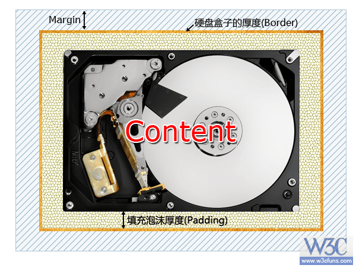
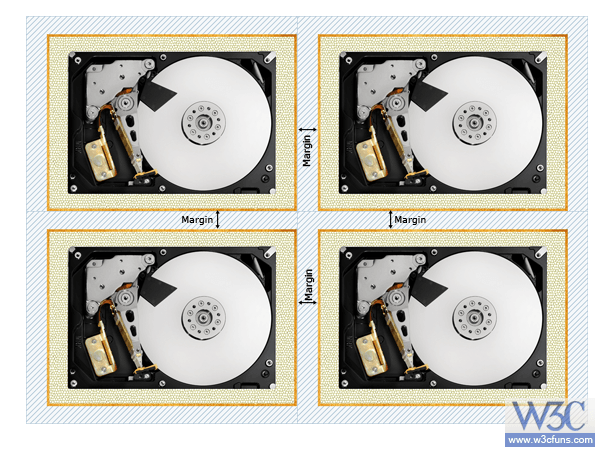
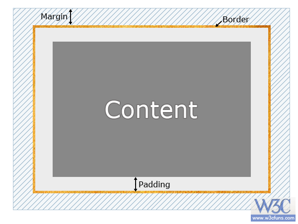

先来...复习
- CSS如何控制页面
- 行内样式
- 内嵌样式
- 链接样式
- 导入样式
- 基本选择器
- 通配符选择器（＊）
- 元素选择器（E）
- 类选择器（.className）
- id选择器（#ID）
- 后代选择器（E F）
- 群组选择器（s1,s2,...,sN）
- 属性选择器
- Ｅ[attr~=“value"]-匹配一个属性值
- E[attr*=“value"]-属性值中包含value
- 伪类选择器
- :nth选择器
- :nth-child(1)
- :nth-child(2n)
- :nth-child(2n+1)
- 样式优先级
- !important高于一切
- 行内样式,加为“1,0,0,0”
- ID属性,加“0,1,0,0”
- 类属性/伪类,加"0,0,1,0"
- 伪元素,加“0,0,0,1”
- + > ~ * :not()没加分
下面开始下一个重要概念：
盒子模型
盒模型
- 盒模型--页面布局中的核心！
- content(内容)
- padding(内边距)
- border(边框)
- margin(外边距)



- 设置定宽的内边距例子
- box-sizing: border-box
- border 和 padding 就被包含在了宽高之内